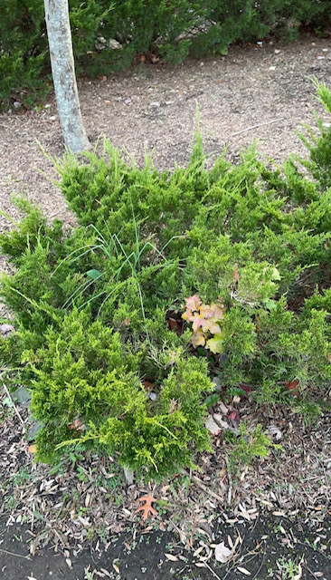

Creeping Juniper
Creeping juniper (Juniperus horizontalis) is a juniper shrub native to North America, particularly Canada. Creeping juniper is mainly grown as an ornamental plant for ground cover in gardens.
There are over 100 cultivars of creeping juniper. Creeping juniper is a juniper shrub native to North America, particularly Canada.
Creeping juniper is mainly grown as an ornamental plant for ground cover in gardens.

Please scan the QRCode below to go to my website: